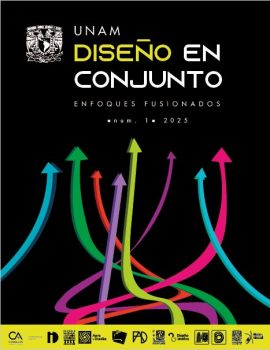

Reseña
El Comité Académico de la Carrera de Diseño, que sesiona en este consejo desde 2013, se caracteriza por ser un comité plural que integra las distintas carreras de diseño en nuestra universidad: Artes y Diseño de la ENES Morelia, Diseño y Comunicación Visual de la FAD y de FES Cuautitlán, en donde además se imparte a distancia; Diseño Gráfico de FES Acatlán y Diseño Industrial del CIDI/Facultad de Arquitectura y FES Aragón.
A lo largo de las sesiones del trabajo del Comité se han abordado distintos temas como perfiles de ingreso, movilidad, planes de estudio, tecnologías de la información y la comunicación, etcétera; sin embargo, surgió la necesidad de indagar en torno a los fundamentos teóricos del diseño en sus diversas vertientes y reflexionar sobre los procesos de formación profesional de los diseñadores, por lo que se organizó este Primer Encuentro de Diseño de la UNAM.
Es así como este encuentro tiene como propósito instaurar un foro de reflexión e intercambio en torno a la conceptualización, experiencias y propuestas relacionadas a la enseñanza de diseño en la UNAM, y su vinculación con el campo profesional en el ámbito nacional e internacional, así como su impacto en los planes de estudio.